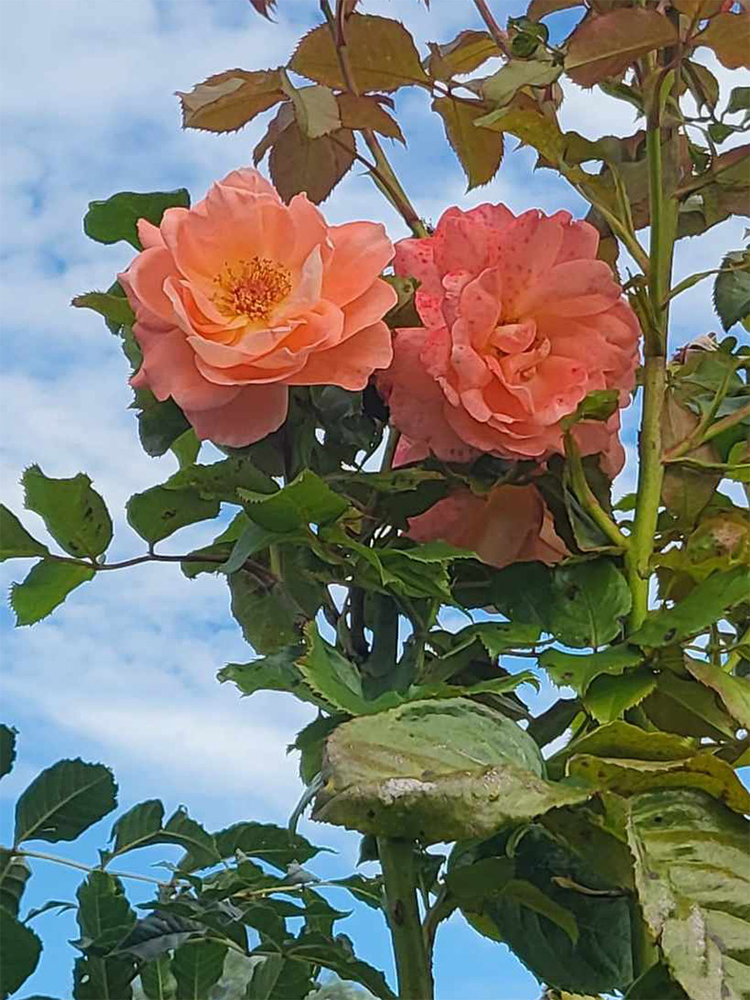
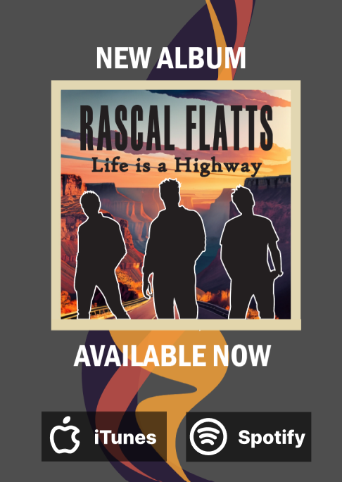
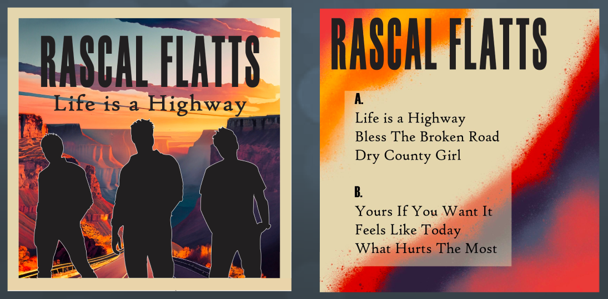
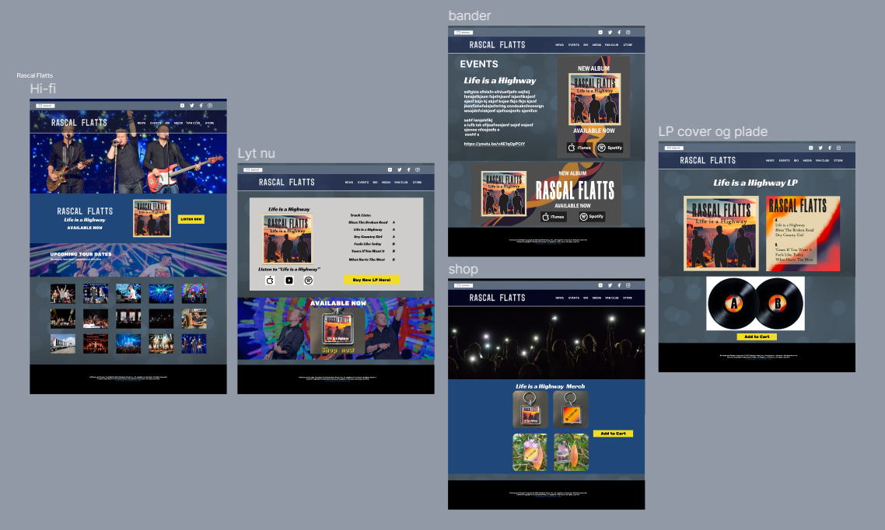
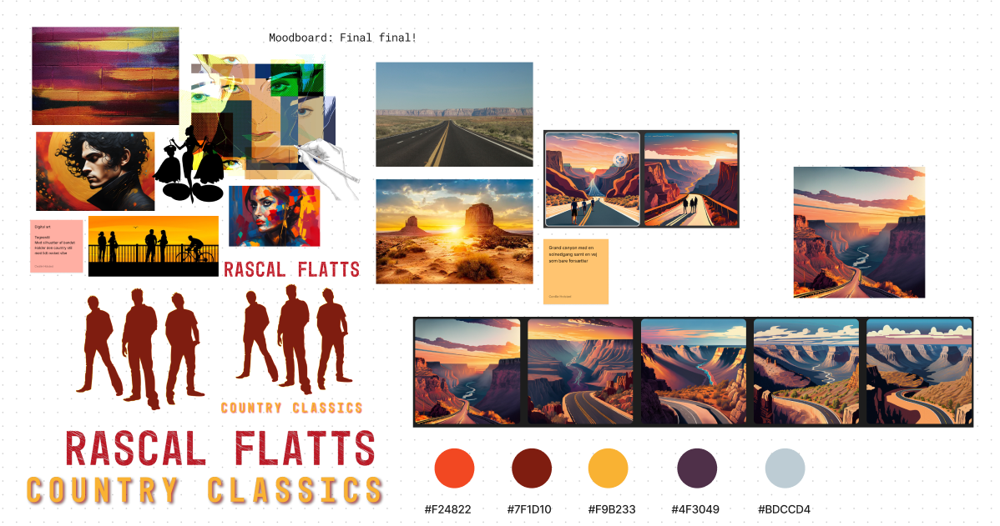
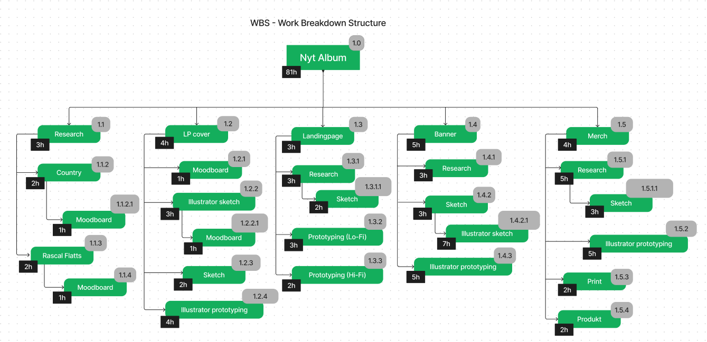
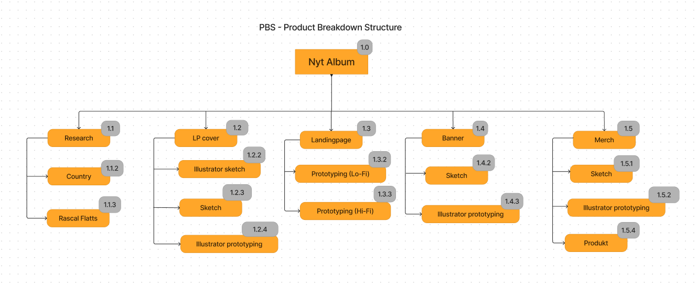
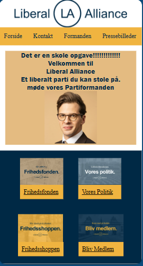
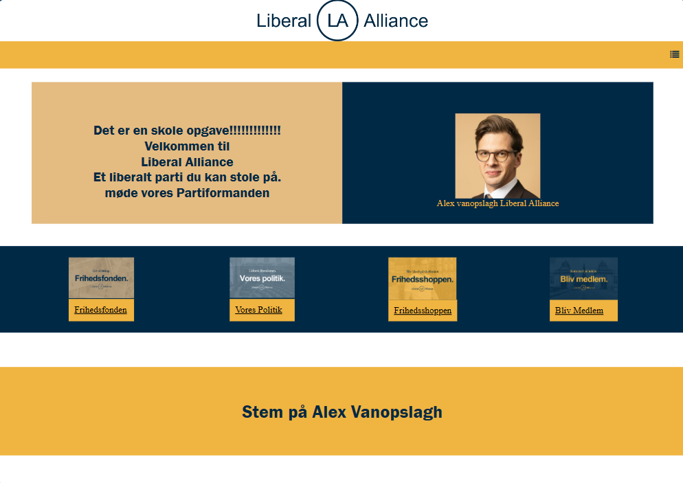

Billedbehandling, Website Protoype
Billedet er blivet behandles i Photoshop
Krev til opgaven
Fjern et element: Noget på billedet skal fjernes og baggrunden (hullet bagved) skal fyldes ud så det passer med billedet.
Tilføj et element: Noget som ikke oprindeligt var i billedet, skal sættes ind, så det ser ud som om, det var der fra starten.
Ret billedets lysforhold eller tilfør billedet en stemning med filter eller farvetoning.
Beskæring og evt opretning (lodret/vandret) af billede.
Format og størrelsen: billedet skal være i format 4:3.
Før, det har været i Photoshop
Efter, det har været i Photoshop
Projektet går ud på at bygge en prototype til et website, der handler om et event for nye studerende i København.
I skal skitsere jeres prototype til websitet i Figma eller lignende prototypeværktøj.
Prototypen skal både se spændende ud og have et indholdsomfang og struktur der giver en bruger lyst til både at udforske indhold og få en overblik.
I bestemmer selv eventets fokus og indhold og I må gerne bruge placeholder tekst.
Fra jeres fotosafari har I taget en serie billeder, som I skal bruge billedsiden af prototypen.
Husk at kategorierne af billederne skal være med i prototypen og at kategorierne dermed får nogen indflydelse på eventets fokus og indhold.
• Kærlighed
• Natur
• Stærke farver
• Refleksion
• Bevægelse
Visuelt Koncept
Lave et visuelt materiale til en musikudgivelse.
Vælg en eksisterende kunstner/musiker, som I finder inspirerende og med inspiration fra tidligere albums, skaber I et visuelt univers, til en mulig fremtidig udgivelse.
Man skal selv finde på en titel til udgivelsen, men der tages højde for kunstnerens tidligere udgivelser, genren og eksisterende grafiske stil.
Det visuelle materiale I får produceret til udgivelsen, anvendes til at lave et album cover, men anvendes også som visuelt tema/univers til at promovere albummet på diverse medie outputs.
Album
Lp Cover
Web Design
Moodbord
WBS
PBS
Byg dit Førstewebsite
Lave et personligt website til et medlem af folketinget.
Formålet med websitet er at præsentere politikeren og hans/hendes politiske mærkesager.
Du vælger selv, hvilket af de 179 folketingsmedlemmer, du vil præsentere.
Du må gerne bruge det indhold (tekst, billeder etc.), som den valgte politiker allerede har tilgængeligt på nettet.
Krav til websitet.
Metodiske krav.
Websitet skal udvikles ud fra princippet Mobile First.
Opgaven skal løses individuelt, men I opfordres til at spare med hinanden undervejs.
Krav til det visuelle.
Indholdet på siden skal organiseres, så det er velordnet, og så elementerne flugter med hinanden.
Layoutet skal tilpasse sig, så indholdet præsenteres fornuftigt på både telefon og computer.
Krav til koden.
Koden skal være velstruktureret og indeholde relevante kommentarer
Al den anvendte CSS-kode skal samles i ét eksternt stylesheet
Filer- og mapper skal navngives logisk og struktureres fornuftigt.
Det er ikke tilladt bruge CSS-frameworks (Bootstrap, Tailwind etc.)
Krav til indholdet.
Websitet skal bestå af en forside og minimum to undersider.
Billeder skal være optimeret til brug på web.
Mobil Versionen
Pc Versionen
SoMe Videoproduktion
Sociale medier er en fast marketingkanal for virksomheder i dag og videoelementet er blevet et grundlæggende
virkemiddel for at fastholde publikums opmærksomhed.
I skal vælge en virksomhed, som arbejder med cirkulær økonomi, hvortil i skal udvikle videoer designet til sociale
medier, som skal henvise til en landingpage, som promoverer et produkt eller service.
Videoerne skal desuden indeholde elementer i form af enten logo, tekst eller grafiske elementer.
På landingpagen skal der være en beskrivelse af valgt firma samt en beskrivelse af det valgte produkt eller
service inkl. En video.
5 sek video
15 sek video
30 sek video